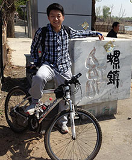

|  |
Zhaoju Li 李兆举School of Electronics, Electrical and Communication Engineering University of Chinese Academy of Sciences, Beijing, China Email: lzj910322 at gmail.com |
Sept. 24, 2016: Participating ICIP 2016 in Phoenix USA.
Oct. 01, 2016: Homepage lauched
I am a ph.D student in School of Electronics, Electrical and Communication Engineering of University of Chinese Academy of Sciences, advised by Prof. Jianbin Jiao. I am a member of Pattern Recognition and Intelligent System Development Laboratory.
My research interests include on computer vision and machine learning. In particular, I am focused on person re-identification.
Person Re-identification via Adaboost Ranking Ensemble
Z. Li, Z. Han, Q. Ye.
IEEE International Conference on Image Processing (ICIP), 2016.
[PDF]
[Code]
[BibTex]
[Feature]
I received the Bachelor degree in Department of Electronic Engineering and Information Science (EEIS) from University of Science and Technology of China (USTC) in 2013.
Teaching assistant at UCAS for
Digital image processing, Autumn 2015, 2016
Machine learning theory and application, Spring 2016